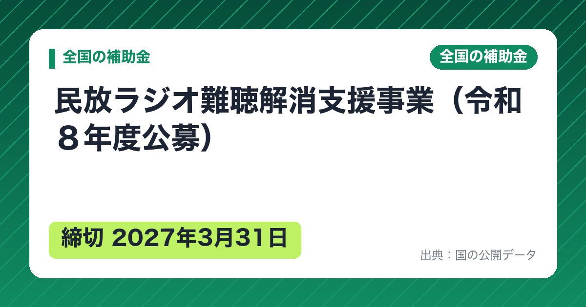

民放ラジオ難聴解消支援事業（令和８年度公募）

締切 2027年3月31日｜上限 要確認
難聴対策のための中継局整備費用の一部を補助
概要
| 対象地域 | 全国 |
|---|---|
| 補助上限額 | 要確認 |
| 補助率 | 地理的・地形的難聴、外国波混信 ２／３ 、都市型難聴 １／２ |
| 受付期間 | 2026年1月30日 〜 2027年3月31日 |
| 対象の従業員数 | 従業員数の制約なし |
| 利用目的 | 新たな事業を行いたい / 販路拡大・海外展開をしたい / イベント・事業運営支援がほしい / 事業を引き継ぎたい / 研究開発・実証事業を行いたい / 人材育成を行いたい / 資金繰りを改善したい / 雇用・職場環境を改善したい / 災害（自然災害、感染症等）支援がほしい / 安全・防災対策支援がほしい / まちづくり・地域振興支援がほしい / 設備整備・IT導入をしたい / エコ・SDGs活動支援がほしい / 教育・子育て・少子化支援がほしい / スポーツ・文化支援がほしい |
| 対象業種 | 情報通信業 |
| 実施機関 | 民放ラジオ難聴解消支援事業 |
公募の内容（原文の抜粋）
■目的・概要
本事業は、国民生活に密着した情報や災害時における生命・財産の確保に必要な情報の提供を確保するため、必要最小の空中線電力の中継局整備によりラジオの難聴を解消することを目的とするものです。
総務省では、ラジオの難聴解消のための中継局整備を行うラジオ放送事業者等に対し、その整備費用の一部補助を行います。
対象設備等の詳細は交付要綱、執行マニュアル（「参照URL」に掲載）をご確認ください。
■根拠法令
電波法第１０３条の２第４項第１２号の３
■応募資格
民間ラジオ放送事業者、地方公共団体 等
■補助対象
難聴対策としての中継局整備
■問合せ先
総務省情報流通行政局放送施設整備促進課（０３－５２５３－５９４９）
■参照URL
https://www.soumu.go.jp/menu_seisaku/ictseisaku/housou_suishin/hosonet_kyojinka02.html
全国のほかの補助金
- 「太陽光発電導入拡大等技術開発事業」の第3回公募（締切 2026年11月25日）
- 【農林水産省】中山間地域所得確保推進事業（締切 2026年11月25日）
- 「ポスト5G情報通信システム基盤強化研究開発事業（社会課題解決に向けた量子コンピュータ次世代機開発・実証の加速）」（g12-2：部素材）の追加公募（締切 2026年11月26日）
- 【事前着手】令和8年度排出削減が困難な産業におけるエネルギー・製造プロセス転換支援事業（二次公募）（事業Ⅱ/紙パルプ・化学・セメント）（締切 2026年11月27日）
- 令和8年度排出削減が困難な産業におけるエネルギー・製造プロセス転換支援事業（二次公募）（事業Ⅱ/紙パルプ・化学・セメント）（締切 2026年11月27日）
- 令和７年度補正 ディマンドリスポンスの拡大に向けたIoT化推進事業（締切 2026年11月27日）
- 【令和８年度】二酸化炭素排出抑制対策事業費等補助金（地域再エネ水素ステーション保守点検等支援事業）（締切 2026年11月28日）
- 令和８年度二酸化炭素排出抑制対策事業費等補助金（運輸部門等の脱炭素化に向けた先進的システム社会実装促進事業のうち、農業機械の電動化促進事業）（締切 2026年11月30日）